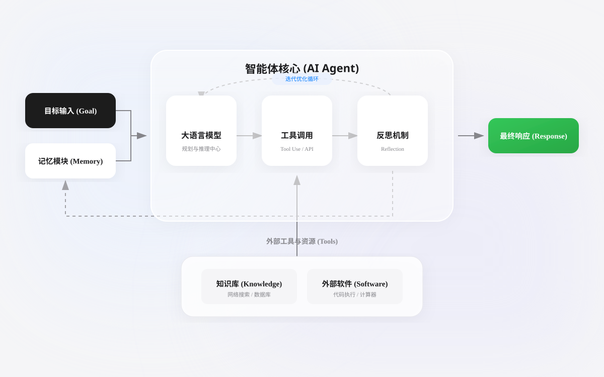
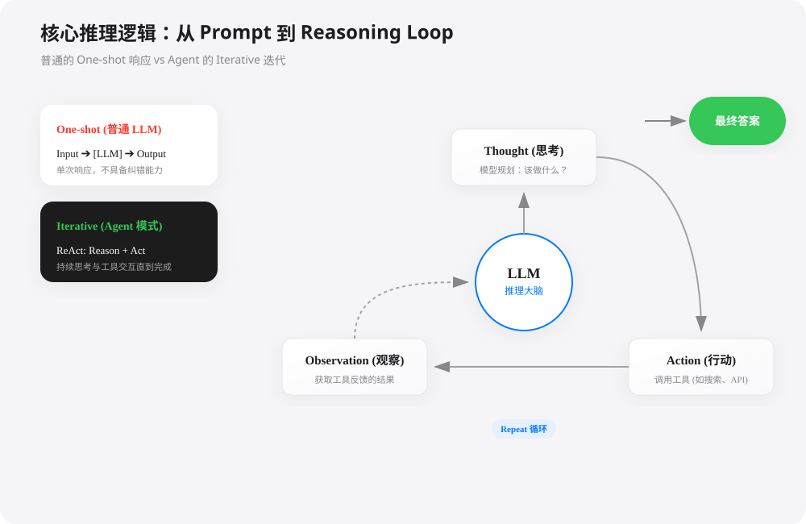
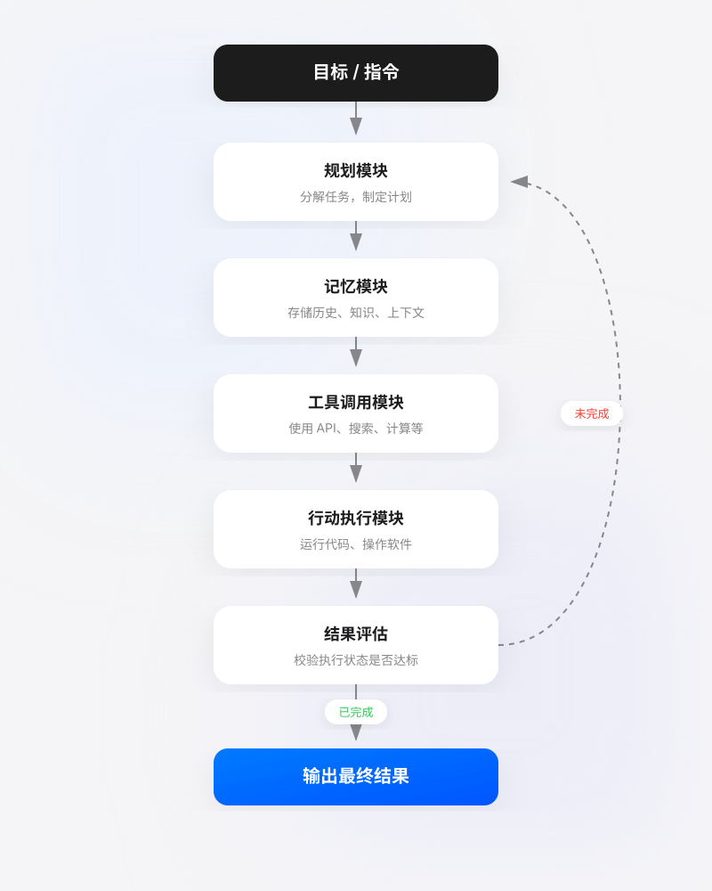
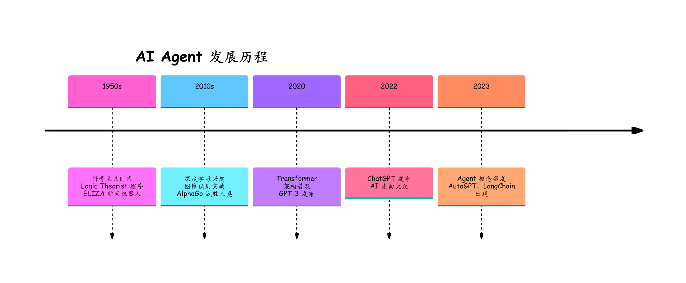

Introducción a AI Agent
En la actual ola tecnológica, detrás de la profunda integración de la inteligencia artificial (IA) en la vida y el trabajo,AI Agent (agente inteligente)es el concepto central detrás detodo, desde los asistentes de conversación hasta los programas de tareas autónomos—no es una simple herramienta de chat, sino que, igual que unempleado digital,puedeaceptar tareas, desglosar pasos y ejecutar acciones—una entidad automatizada: siempre que una tarea pueda descomponerse en procesos operativos, puede ser asumida por el AI Agent.
Agent = LLM (cerebro) + Planning (planificación) + Tool use (ejecución) + Memory (memoria).
- LLM (cerebro):Como motor de razonamiento central, se encarga de comprender la intención, generar texto y realizar juicios lógicos.
- Planning (planificación):Puede descomponer objetivos complejos (como "ayúdame a organizar un encuentro técnico") en pasos ejecutables.
- Memory (memoria):Registra el historial de conversaciones (a corto plazo) y almacena una base de conocimientos especializados (a largo plazo).
- Tool Use (uso de herramientas):Puede buscar en Google, consultar bases de datos e incluso ejecutar código Python según las necesidades.

Diferencias entre Agent y los modelos de IA tradicionales
| Dimensión | Modelo de IA tradicional | AI Agent |
|---|---|---|
| Forma de interacción | Entrada y salida únicas | Diálogo de múltiples turnos, interacción continua |
| Capacidad de decisión | Razonamiento directo basado en la entrada | Planificación, reflexión y optimización iterativa |
| Uso de herramientas | No puede invocar herramientas externas de forma proactiva | Puede invocar búsquedas, calculadoras, API, etc. |
| Mecanismo de memoria | Limitado al contexto actual | Memoria a corto plazo + a largo plazo |
| Orientación a objetivos | Completa una única tarea de predicción | Completa objetivos complejos |
| Manejo de errores | La salida es el final | Puede autocorregirse y reintentar |
Patrón central: del Prompt al Reasoning Loop
Un LLM común solo ofrece unarespuesta One-shot (de una sola vez),mientras que el núcleo de un Agent radica enIterative (iterativo).。
El patrón ReAct (Reason + Act)es actualmente la lógica de razonamiento de Agent más utilizada:
- Thought (pensamiento):El modelo describe qué va a hacer y por qué lo hace.
- Action (acción):El modelo selecciona una herramienta (por ejemplo:
Google Search）。 - Observation (observación):El modelo lee el resultado devuelto por la herramienta.
- Repeat (bucle):Repite los pasos anteriores hasta obtener la respuesta final.

Composición de AI Agent: pensar y actuar como un humano
Un AI Agent completamente funcional normalmente imita el ciclo cognitivo y de acción humano e incluye los siguientes módulos clave:

1. Módulo de planificación: el cerebro y comandante de las tareas
Este es el centro de pensamiento del Agent. Se encarga de descomponer los objetivos vagos y de alto nivel del usuario (como: analizar los datos de ventas del último trimestre de la empresa) en una serie de pasos de subtareas claros y ejecutables.
- Descomposición de tareas: dividir el objetivo general en pasos pequeños. Por ejemplo: 1. Conectar a la base de datos; 2. Extraer los datos de ventas del Q3; 3. Clasificar por producto y región; 4. Calcular la tasa de crecimiento intertrimestral; 5. Generar gráficos de visualización.
- Reflexión y ajuste: el Agent evalúa el resultado de cada acción. Si falla (por ejemplo, la base de datos no se conecta), reflexiona sobre la causa y ajusta el plan (por ejemplo, intentando otro método de conexión o pidiendo al usuario que proporcione la contraseña).
2. Módulo de memoria: el cuaderno de la experiencia
El Agent necesita memoria para mantener conversaciones y operaciones coherentes y basadas en el contexto.
- Memoria a corto plazo: recuerda el contexto de la conversación actual para garantizar que las respuestas no se desvíen del tema.
- Memoria a largo plazo: almacena información importante de las interacciones y los conocimientos aprendidos en bases de datos o bases de datos vectoriales para consultas y usos futuros, volviéndose cada vez más inteligente con el uso.
3. Módulo de invocación de herramientas: las manos ágiles
Esta es la clave para que el Agent pase de ser un pensador a un actor. Puede invocar herramientas externas a través de interfaces de programación de aplicaciones (API) para ampliar sus capacidades.
Herramientas comunes：
- Herramienta de búsqueda: se conecta a Internet para obtener la información más reciente.
- Calculadora / intérprete de código: realiza operaciones matemáticas o ejecuta código para procesar datos.
- Operación de software: envía correos electrónicos, manipula hojas de cálculo y controla dispositivos de hogar inteligente a través de API.
- Herramientas profesionales: invoca software profesional para generación de imágenes, síntesis de voz, análisis de datos, etc.
Características principales
Un AI Agent calificado suele tener las siguientes características:
1. Autonomía (Autonomy)
- Puede operar de forma independiente sin instrucciones paso a paso de los humanos
- Decide por sí mismo qué hacer a continuación
- Ejemplo: si dices "ayúdame a reservar un vuelo a Shanghái para mañana", el Agent consultará automáticamente los vuelos, comparará los precios y elegirá la opción adecuada
2. Reactividad (Reactivity)
- Puede percibir los cambios del entorno y responder de manera oportuna
- Ajusta su comportamiento según la nueva información
- Ejemplo: si al reservar descubre que el vuelo fue cancelado, busca automáticamente una alternativa
3. Proactividad (Proactivity)
- No solo responde de forma pasiva, sino que también es capaz de tomar la iniciativa
- Tiene un comportamiento orientado a objetivos
- Ejemplo: al detectar fluctuaciones en el precio de los vuelos, recuerda proactivamente al usuario el mejor momento para comprar
4. Capacidad social (Social Ability)
- Puede interactuar con humanos u otros Agent
- Comprende el lenguaje natural y mantiene diálogos de múltiples turnos
- Ejemplo: durante el proceso de reserva, pregunta al usuario sus preferencias (ventanilla/pasillo)
5. Capacidad de aprendizaje (Learning)
- Aprende de interacciones pasadas
- Recuerda las preferencias y el contexto del usuario
- Ejemplo: recuerda que prefieres vuelos matutinos y asiento de ventanilla
Trayectoria de desarrollo de AI Agent
Línea de tiempo

Fase 1: período de gestación del concepto (1950s-2010s)
- 1950s: se propone la prueba de Turing y surge el concepto de Agent
- 1990s: surge la investigación sobre sistemas multiagente
- 2000s: chatbots basados en reglas (como ELIZA)
- Característica: basados en reglas, con capacidad limitada
Fase 2: período de potenciación del aprendizaje profundo (2010s-2020)
- 2012: el aprendizaje profundo logra un gran avance en ImageNet
- 2017: surge la arquitectura Transformer
- 2018-2020: se lanzan los modelos de las series BERT y GPT
- Característica: mejora la capacidad de comprensión, pero sigue siendo una "herramienta pasiva"
Fase 3: período de explosión de los Agent basados en grandes modelos (2021-presente)
- 2022.11: se lanza ChatGPT, que demuestra una poderosa capacidad de conversación
- 2023.03: GPT-4 + Plugins, primera implementación de la invocación de herramientas
- 2023.03: AutoGPT se vuelve de código abierto, prueba de concepto del Agent autónomo
- 2023.05: los frameworks como LangChain y LlamaIndex alcanzan la madurez
- 2024-2025: las aplicaciones de Agent a nivel empresarial se implementan a gran escala
- Características: autonomía real, uso de herramientas, planificación de tareas.
Modos de colaboración entre múltiples Agent
Varios Agent pueden trabajar en colaboración, como un equipo:
Principales tipos y escenarios de aplicación de AI Agent
Según su complejidad y autonomía, los AI Agents se pueden dividir en diferentes tipos y aplicarse en diversos escenarios:
| Tipo | Características | Ejemplos de escenarios de aplicación |
|---|---|---|
| Agent de tarea única | Se centra en completar una tarea específica, con una función dedicada. | Robots de atención al cliente inteligentes, asistentes de entrada de datos automática, asistentes de recordatorio de agenda personal. |
| Agent multimodal | Puede comprender y procesar múltiples tipos de información como texto, imágenes y voz. | Generar código de sitio web a partir de bocetos, analizar imágenes médicas y generar informes, resumen automático de contenido de video. |
| Agent autónomo | Posee alta autonomía, puede ejecutarse durante largos períodos y gestionar activamente objetivos complejos. | Automóviles autónomos, sistemas automatizados de negociación de acciones, NPC (personajes no jugadores) inteligentes en juegos. |
| Agent de simulación | Realiza simulaciones, pruebas y entrenamiento en entornos virtuales. | Entrenar robots para completar tareas de agarre, simular la optimización del flujo de tráfico urbano, simulación molecular para el desarrollo de nuevos fármacos. |
Aplicaciones prácticas populares actuales：
- Asistente de programación de IA: como Devin, puede completar de forma independiente todo el flujo, desde el análisis de requisitos y la escritura de código hasta las pruebas y el despliegue.
- Asistente de investigación científica con IA: lee automáticamente una gran cantidad de literatura, plantea hipótesis y diseña planes experimentales.
- Asistente personal de vida: gestiona tu correo y agenda, realiza pedidos de comida automáticamente y compara precios de compras.
- Automatización de procesos empresariales: procesa automáticamente solicitudes de reembolso, genera informes semanales y da seguimiento a contratos de clientes.
Desafíos comunes y limitaciones
Problema de alucinación (Hallucination)
El Agent puede generar información que parece razonable pero que en realidad es incorrecta; es necesario reducir el riesgo mediante mecanismos de recuperación aumentada y verificación.
Expansión del alcance (Scope Creep)
Una autonomía excesiva puede llevar al Agent a realizar operaciones fuera del alcance esperado; es necesario establecer límites de permisos claros.
Control de costos
Las múltiples rondas de iteración que invocan LLM y herramientas pueden generar costos elevados; es necesario optimizar las estrategias de invocación y los mecanismos de caché.
Seguridad y privacidad
El Agent puede acceder a datos sensibles; es necesario implementar controles de acceso estrictos y mecanismos de auditoría.
Autonomía progresiva
Comience con tareas simples y aumente gradualmente los permisos autónomos del Agent, avanzando paso a paso.
Supervisión humana
Establezca revisión humana en los nodos críticos de decisión para equilibrar eficiencia y seguridad.
Evaluación continua
Establezca un sistema completo de indicadores de evaluación, y pruebe y optimice periódicamente el rendimiento del Agent.
Mecanismo de tolerancia a fallos
Implemente mecanismos como reintentos, degradación y alertas para garantizar la estabilidad del sistema.
Tendencias de desarrollo futuro
Profundización de la interacción multimodal
El Agent integrará mejor capacidades de percepción multimodal como la visual, la auditiva y la táctil, logrando una interacción persona-computadora más natural.
Sistema de colaboración multi-Agent
Varios Agents especializados trabajan en colaboración, formando una estructura organizativa similar a un "equipo de IA", para manejar tareas complejas.
Implementación de edge computing
Los Agents ligeros se ejecutarán en el lado del borde, como teléfonos móviles y dispositivos IoT, brindando servicios inteligentes localizados.
Especialización en dominios verticales
Los Agents en campos profesionales como medicina, derecho y finanzas tendrán un conocimiento del dominio y capacidades de razonamiento más sólidos.
Haz clic para compartir notas
<p style="font-size:14px;">¡La nota debe ser una expansión del contenido de este artículo!</p><br> <p style="font-size:12px;"><a href="../tougao.html" target="_blank">Envío de artículos, haga clic aquí</a></p> <p style="font-size:14px;"><a href="../w3cnote/runoob-user-test-intro.html" target="_blank">Cómo obtener el código de invitación de registro</a></p> <h3 class="text-muted"><i class="fa fa-info-circle" aria-hidden="true"></i> Antes de compartir notas debe <a href=";.html" class="runoob-pop">iniciar sesión</a>!</h3> <p><a href="../w3cnote/runoob-user-test-intro.html" target="_blank">Cómo obtener el código de invitación de registro</a></p>